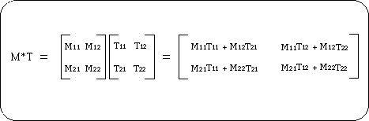

Return to previous page | Return to menu ｜ Go to next page
This chapter describes the basic matrix for building 3D graphics.
The first half explains the matrix operation and its concept, and the second half explains the construction of objects with a hierarchical structure using a stack matrix.
Please read and understand the matrix hierarchy in particular because it is an important element in 3D graphics representation by Sega Saturn.
A matrix is also called a matrix. This is a concept for treating a group of numbers as a single unit, unlike the operation of single numbers.
The matrix is a group of numbers of n rows x m columns, which is different from normal numerical operations, but it is also possible to perform arithmetic operations between matrices (for details, refer to specialized books).
The figure below shows an example of multiplication of 2 rows x 2 columns matrix.
In the case of SGL, a 4 row x 3 column matrix is used as a matrix variable to accurately represent the 3D space (to realize XYZ coordinate values and various conversion operations).

Note) M11 to M22 and T11 to T22 are normal variables
In the modeling transformation explained in “Chapter 4: Coordinate transformation”, a new polygon vertex data string was created by multiplying the polygon vertex data string actually represented as a matrix by various transformation matrices (rotation, movement, scale, etc.). Thing.